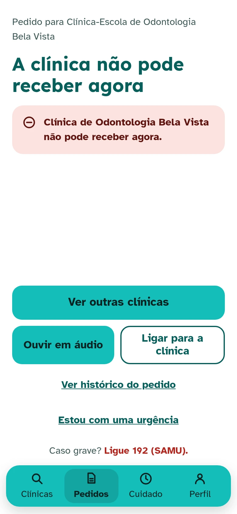
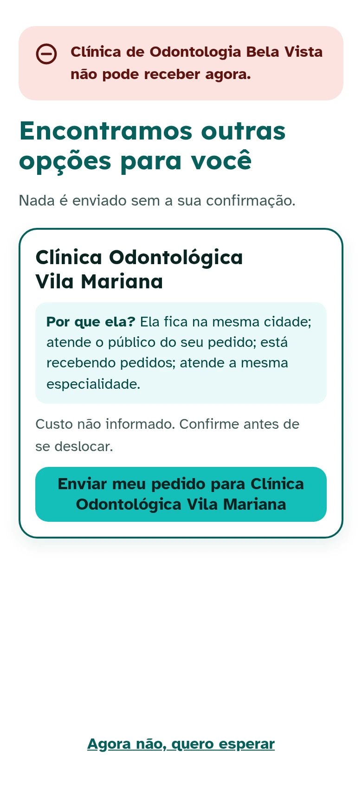
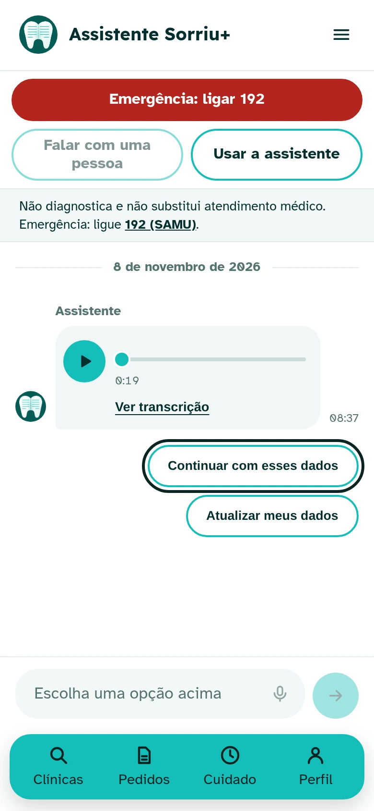
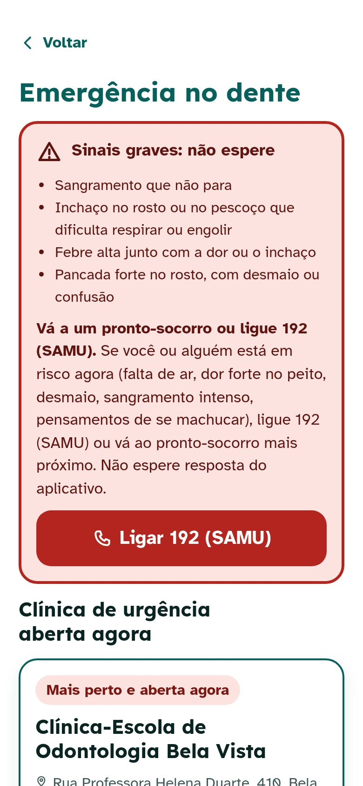
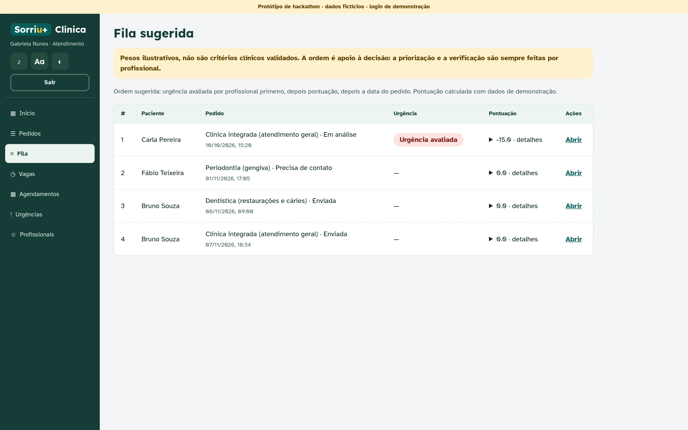

de espera média para começar um tratamento.
das consultas odontológicas na atenção básica terminam em falta. A cadeira fica vazia.
Existe outra porta.
As clínicas-escola de odontologia das universidades atendem a comunidade e precisam de pacientes para formar novos dentistas.
Ache a clínica-escola mais perto.
Distância, custo, turnos e acessibilidade, em linguagem simples.
Ouviu um não? Outra porta se abre.
O app mostra outras clínicas. Você escolhe para onde vai.
Encaminhado para outra universidade.
A clínica nova vê o diagnóstico já feito, e você não repete exames.
Um prontuário que vai com você.
Protegido, com registro de quem viu. Outra clínica só vê com a sua confirmação.
Escolha o dia. A clínica confirma.
“Confirmado” só aparece quando a clínica confirma.
Ajuda que explica.
Assistente, letra grande e áudio. Emergência: SAMU 192 sempre à vista.








Todos os pedidos num lugar só.
Fila organizada por prioridade.
Horário vago vira atendimento.


dos estudantes que pensam em desistir de odontologia nunca tiveram prática clínica.
Fonte: Revista da ABENO.